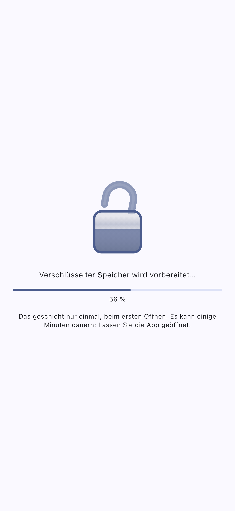
PhoneGhost ist ein zweites Adressbuch, das vom Telefonbuch des Geräts getrennt ist und zusätzlich ein oder mehrere verschlüsselte private Adressbücher hosten kann, die jeweils durch einen von Ihnen gewählten Code geschützt sind.
Private Adressbücher sind keine versteckte Funktion: Die App gibt sie offen bekannt — beim ersten Start und in den App-Stores. Was verborgen ist, ist wie viele davon existieren und ob überhaupt welche existieren — und das ist kein Präsentationsdetail, sondern das Prinzip, auf dem alles andere aufgebaut ist. Es gibt keine Liste, keinen Zähler, kein aufleuchtendes Symbol. Nicht einmal für Sie.
Dies geschieht einmal pro Installation und kann nicht übersprungen werden.
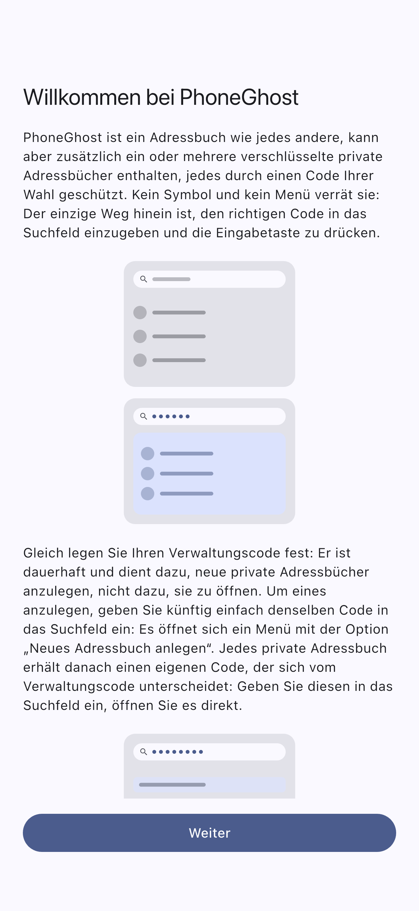
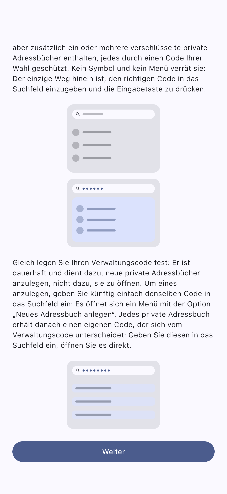
Dies ist der einzige Punkt in der App, an dem der Mechanismus vollständig erklärt wird. Die Illustrationen sagen ohne Worte, was Worte schlecht erklären: Der Code eines privaten Adressbuchs, in das Suchfeld eingegeben, öffnet dieses Adressbuch; der Verwaltungscode öffnet ein Menü, kein Adressbuch.
Die Erklärung ist jederzeit über das Verwaltungsmenü erreichbar (§6.1): Es handelt sich nicht um einen Bildschirm, den man einmal sieht und dann verliert.

Die App schreibt hier den Speicherplatz, der die privaten Adressbücher aufnehmen wird — immer die gleiche Menge, egal ob Sie eines, zehn oder keines erstellen. Deshalb verrät das Warten nichts über Sie: Der Fortschrittsbalken bewegt sich bei jeder Installation identisch.
Das dauert auf einem Telefon von 2019 mehrere Dutzend Sekunden. Das Schloss füllt sich zusammen mit dem Balken, und ein Reflex zieht langsam hindurch: Er soll unterscheiden, ob die App „noch arbeitet" oder „hängen geblieben ist" — das ist der einzige Zweifel, den dieser Bildschirm ausräumen soll.
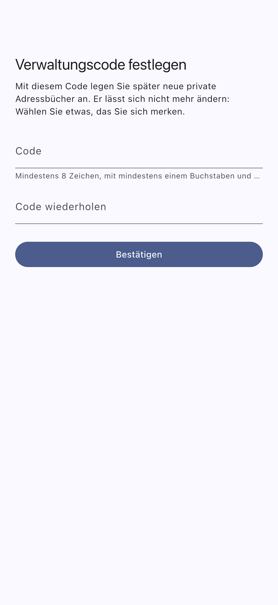
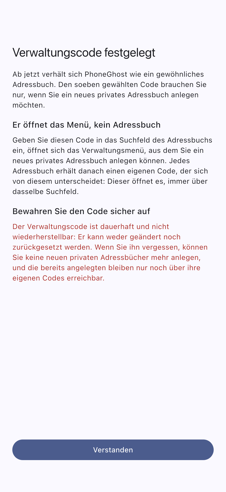
Mindestens 8 Zeichen, mit mindestens einem Buchstaben und einer Ziffer.
Der Bestätigungsbildschirm existiert, um genau eine Sache zu sagen — die, die am häufigsten missverstanden wird: Der Verwaltungscode öffnet ein Menü, kein Adressbuch.
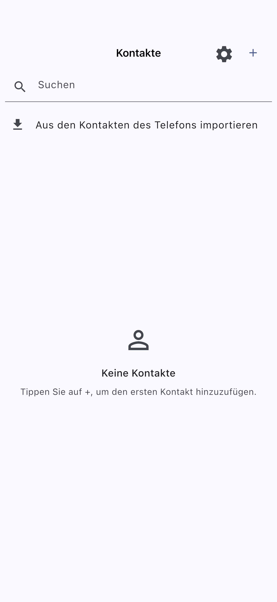
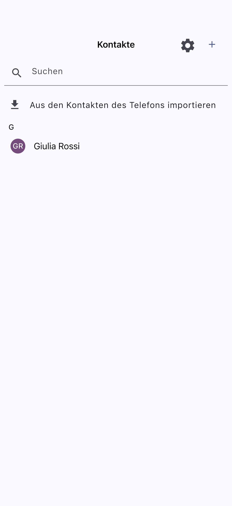
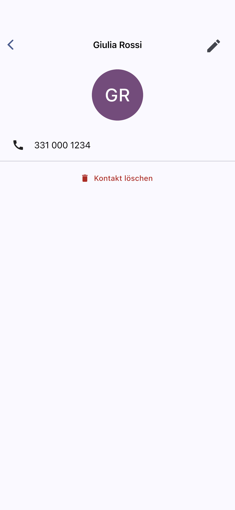
Ein gewöhnliches Adressbuch: alphabetisch sortierte Liste mit Abschnittsbuchstaben, Initialien-Avatar (Farbe aus dem Namen abgeleitet, weder zufällig noch manuell gewählt), Suche, Kontaktkarte, Bearbeiten, Löschen.
Die Suche ignoriert Akzente und Groß-/Kleinschreibung. Die Suche nach muller findet Müller und umgekehrt: Intern werden Namen in einer „normalisierten" Form verglichen. Das gilt für Vor-, Nachname und Unternehmen.
Das Löschen erfordert eine Bestätigung per Dialog und ist nicht rückgängig zu machen: Innerhalb eines privaten Adressbuchs gibt es keine Systemkopie, von der man wiederherstellen könnte.
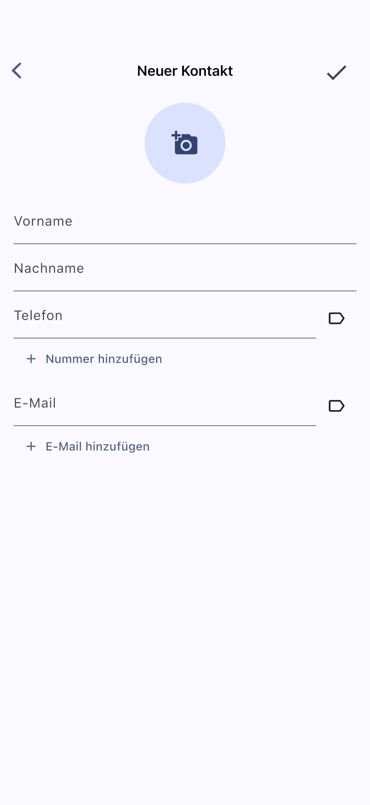
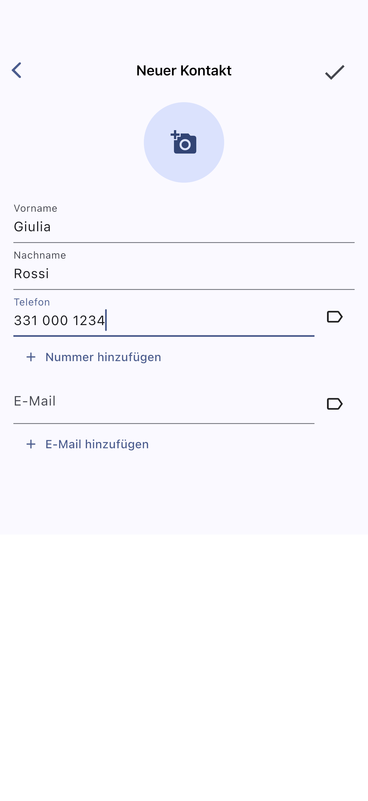
Vorname, Nachname, Unternehmen, Funktion, mehrere Telefonnummern und mehrere E-Mail-Adressen, jeweils mit eigenem Label (Mobil, Zuhause, Arbeit oder ein benutzerdefiniertes). „Nummer hinzufügen" und „E-Mail hinzufügen" erstellen eine zusätzliche Zeile.
Das Foto wird oben angetippt: Mit der Kamera aufnehmen oder aus der Galerie wählen. Es wird verkleinert und verschlüsselt in einer eigenen Datei gespeichert; wenn die Berechtigung verweigert wird, teilt die App das mit, statt still zu versagen.
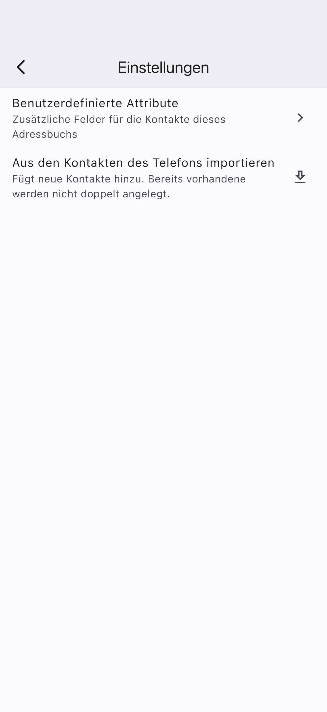
Der Import gibt es an zwei Stellen, die auf unterschiedliche Bedürfnisse eingehen:
Er kann beliebig oft wiederholt werden. Bereits vorhandene Kontakte werden erkannt und übersprungen, sodass das Adressbuch sich nicht verdoppelt. Die Erkennung funktioniert so:
Die Nummer hat intentionell Vorrang vor dem Namen: Zwei verschiedene Personen können denselben Namen haben, und die umgekehrte Regel würde eine davon stillschweigend verschwinden lassen.
Überspringen, nicht aktualisieren. Ein bereits vorhandener Kontakt wird nicht mit Telefondaten überschrieben: In PhoneGhost vorgenommene Änderungen — Labels, benutzerdefinierte Attribute, Aliasse — bleiben erhalten. Die akzeptierte Konsequenz: Wenn Sie jemandes Nummer auf dem Telefon ändern, fügt ein neuer Import ihn als neuen Kontakt hinzu, anstatt den vorhandenen zu aktualisieren.
Am Ende eines Imports teilt die App immer das Ergebnis mit, auch wenn es nichts zu tun gab („Keine neuen Kontakte zum Importieren"), weil ein Import, der nichts findet, und einer, der nie gestartet ist, sonst identisch aussehen würden.
Der Import existiert nur im öffentlichen Adressbuch. Private Adressbücher importieren niemals aus dem Systemadressbuch.
Zusätzliche Felder, die Sie selbst definieren, für jedes Adressbuch unterschiedlich: Die des öffentlichen Adressbuchs existieren nicht innerhalb eines privaten und umgekehrt.
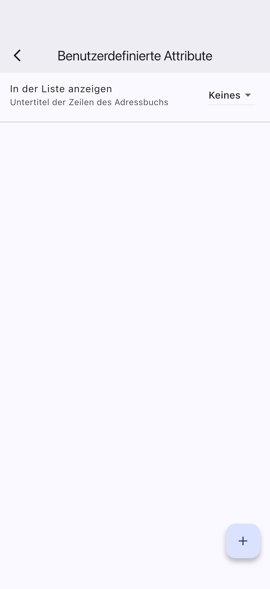
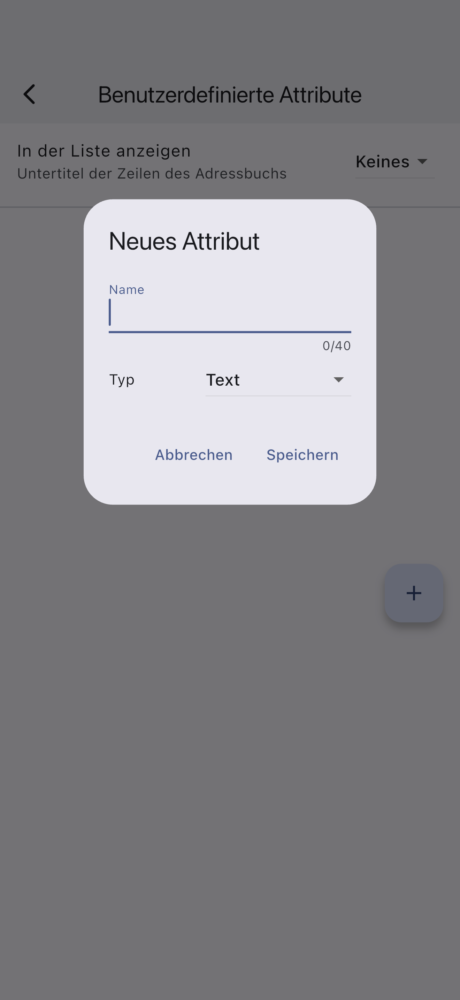
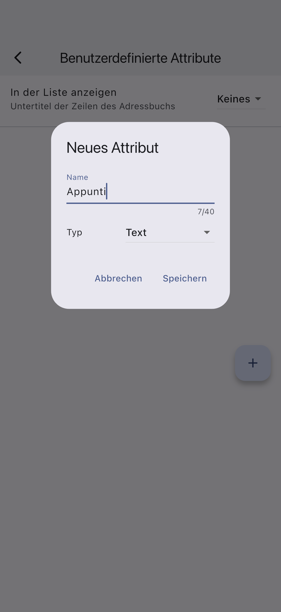
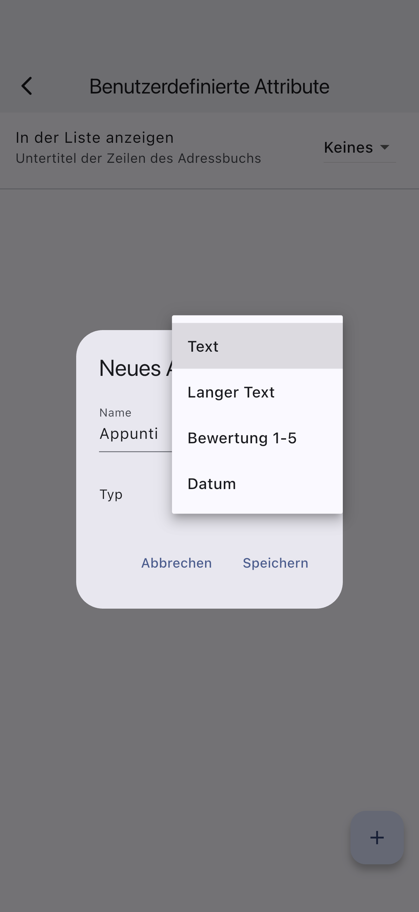
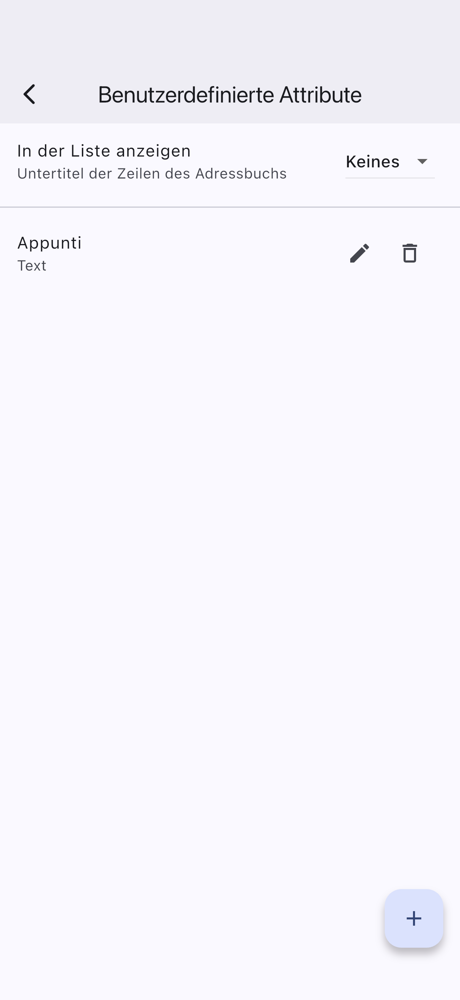
Vier Typen: Text (bis zu 200 Zeichen), Langer Text, Bewertung 1–5 (Sterne) und Datum.
Namen müssen eindeutig sein, und der Vergleich ignoriert Akzente und Groß-/Kleinschreibung: „Stadt" und „stadt" wären dasselbe Attribut, nicht zwei verschiedene.
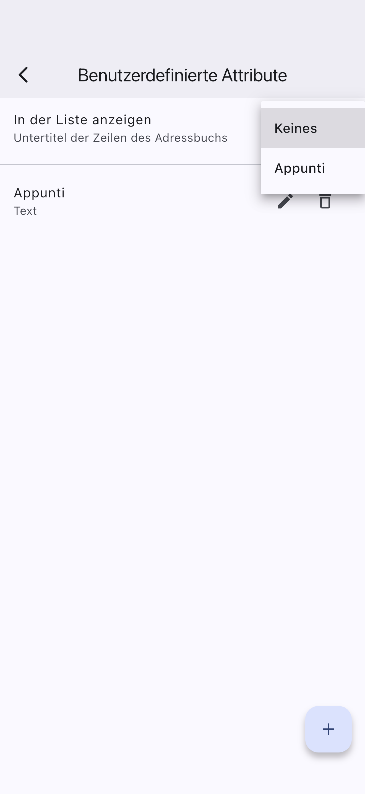
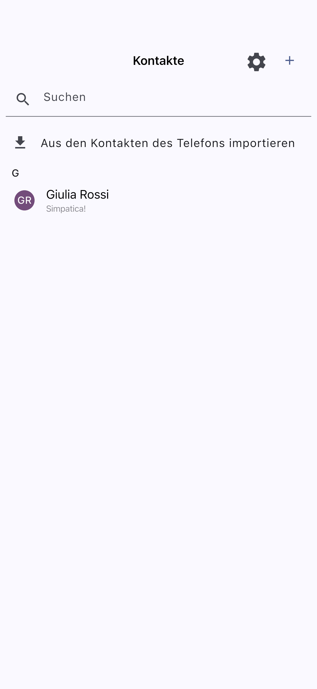
Ein Attribut — nur eines — kann zum Untertitel der Listenzeilen werden. Das macht die Liste lesbar, wenn Namen allein nicht ausreichen, um Personen zu unterscheiden.
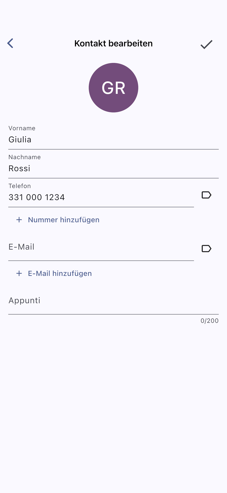
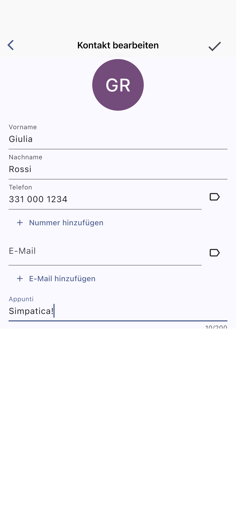
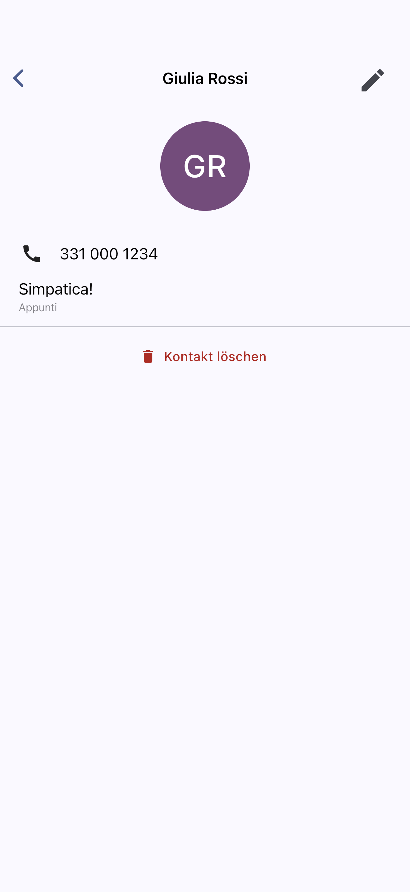
Definierte Attribute erscheinen am Ende des Editors jedes Kontakts in diesem Adressbuch, mit dem für den Typ geeigneten Steuerelement. Ausgefüllte Werte sind in der Kontaktkarte sichtbar.
Das Löschen eines Attributs löscht auch die Werte, die Kontakte für dieses Feld hatten, und die Bestätigung weist darauf hin.
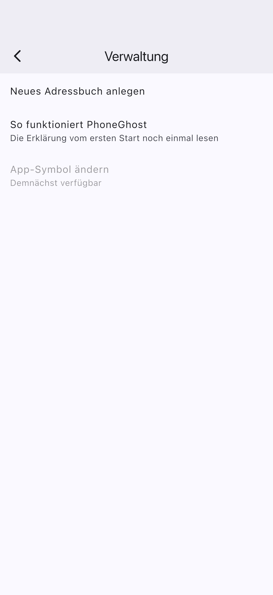
Es öffnet sich durch Eingabe des Verwaltungscodes in das Suchfeld des Adressbuchs und Drücken der Eingabetaste. Es gibt keinen anderen Weg: keinen Knopf, keinen Menüeintrag, keine geheime Geste.
Drei Einträge: Ein neues privates Adressbuch erstellen, die Erklärung vom ersten Start nochmals lesen, und das App-Symbol ändern — Letzteres angekündigt, aber noch nicht implementiert.
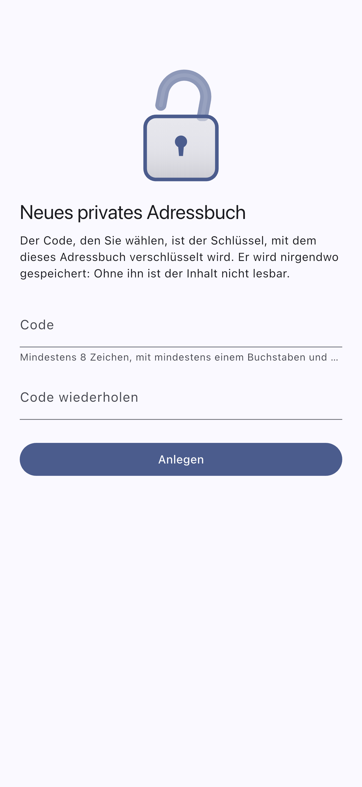
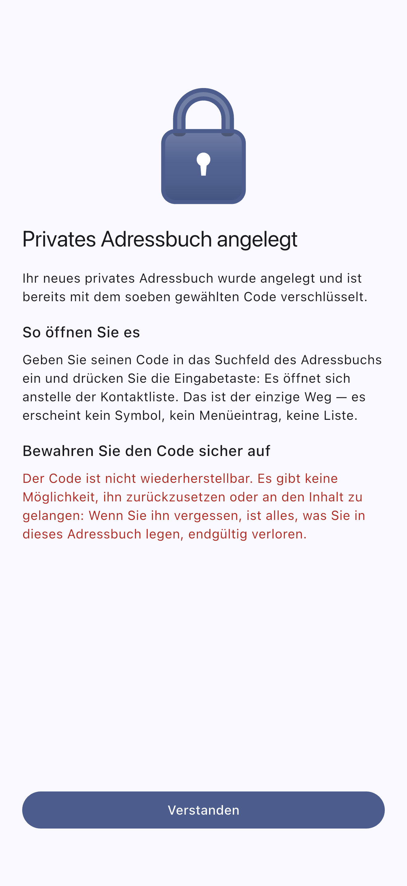
Der von Ihnen gewählte Code ist der Schlüssel, mit dem das Adressbuch verschlüsselt wird. Er wird nirgendwo gespeichert: Der Schlüssel wird aus den gespeicherten Daten abgeleitet, niemals der Code selbst.
Die Regeln sind dieselben wie für den Verwaltungscode (8+ Zeichen, mindestens ein Buchstabe und eine Ziffer). Ist der Code nicht akzeptabel, sagt die App nur „Ungültiger Code": Sie sagt nicht warum, und insbesondere sagt sie nie „Dieser Code ist bereits vergeben" — das würde verraten, dass ein anderes Adressbuch existiert.
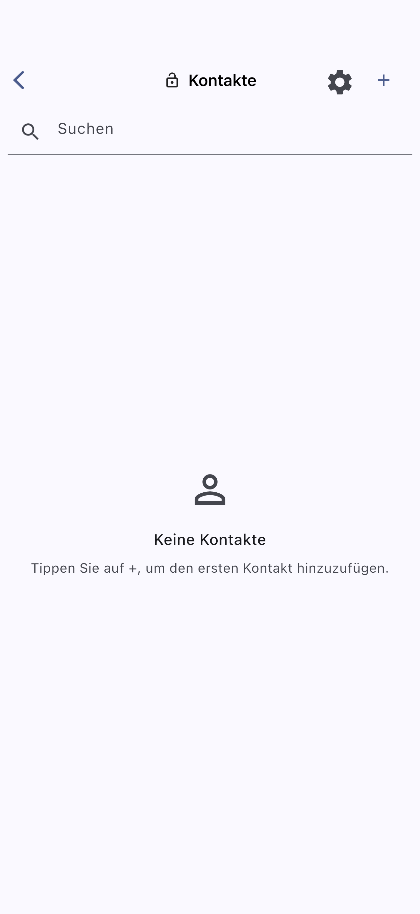
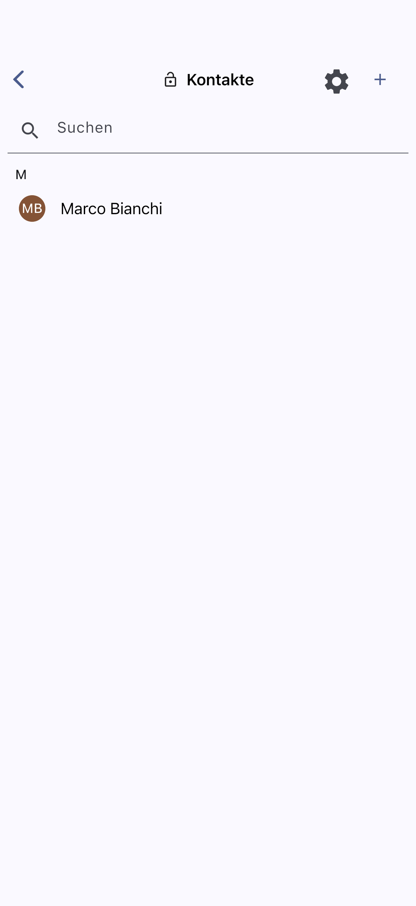
Tippen Sie seinen Code in das Suchfeld und drücken Sie die Eingabetaste: Ein privates Adressbuch ersetzt die öffentliche Liste. Das ist der einzige Weg.
Das einzige Zeichen, dass Sie sich in einem privaten Adressbuch befinden, ist das kleine Schloss neben dem Titel — bewusst diskret: Jemand, der den Bildschirm aus der Ferne betrachtet, sieht ein Adressbuch.
Alles funktioniert genauso wie im öffentlichen Adressbuch: Kontakte, Suche, Fotos, Attribute. Zurückdrücken schließt das Adressbuch und seine Datenbank.
Zwei erklärte Einschränkungen:
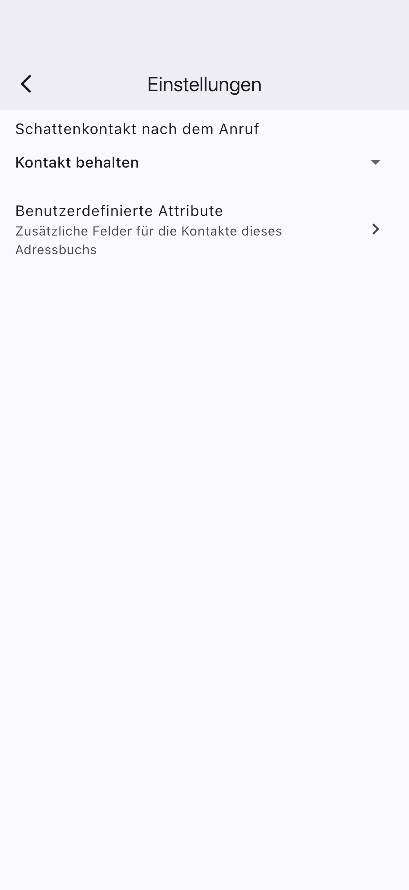
Das öffentliche Adressbuch hat Import und keine Ghost-Kontakt-Richtlinie; ein privates Adressbuch ist genau umgekehrt — kein Import, aber mit der Ghost-Kontakt-Verwaltungsoption (§7).
Wenn Sie einen Kontakt aus einem privaten Adressbuch anrufen, existiert sein Name für das System nicht — er würde in „Zuletzt" als bloße Nummer erscheinen. PhoneGhost erstellt daher, einen Moment vor dem Wählen, einen Ghost-Kontakt im Systemadressbuch mit dem von Ihnen gewählten Alias, sodass das Anrufprotokoll einen Namen anzeigt.
Der Alias wird im Kontakteditor gesetzt, und das Feld erscheint nur innerhalb eines privaten Adressbuchs: Im öffentlichen Adressbuch macht das keinen Sinn, da die Kontakte dort nicht privat sind.
Die Option „Ghost-Kontakt nach dem Anruf" (§6.4) entscheidet, was mit diesem Kontakt passiert:
| Einstellung | Wirkung |
|---|---|
| Kontakt behalten (Standard) | Der Ghost-Kontakt verbleibt im Systemadressbuch und der Name erscheint weiterhin in „Zuletzt" |
| Kontakt löschen | Der Ghost-Kontakt wird unmittelbar nach dem Anruf entfernt |
Das Verhalten hängt vom Wähler ab: Ein anderes Telefon könnte sich genau entgegengesetzt verhalten. Der Standard ist gewählt, um im schlimmsten Fall zu funktionieren.
Um Ghost-Kontakte in der Kontakte-App des Telefons auszublenden, deaktivieren Sie das Konto it.phoneghost.local unter „Anzuzeigende Kontakte".
Die App spricht sechs Sprachen — Italienisch, Englisch, Spanisch, Französisch, Deutsch, Portugiesisch — und folgt der Sprache des Telefons; wer keine der sechs spricht, sieht Englisch.
Helles und dunkles Design, dem System folgend. Auf dem iPhone verwenden einige Bildschirme native iOS-Steuerelemente.
Private Adressbücher verbergen, welche Speicherplätze belegt sind, und die Anzahl ist mit Täuschungsplätzen vermischt. Aber:
Das ist kein zu behebender Fehler: Es ist die erklärte Grenze dessen, was das Projekt verspricht.